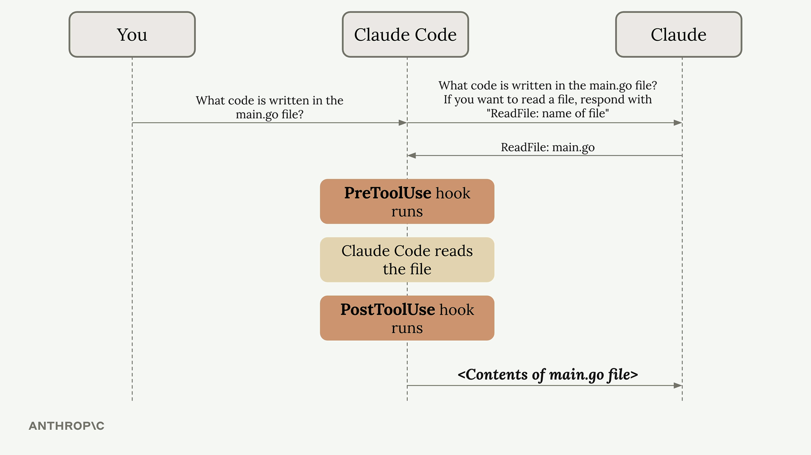
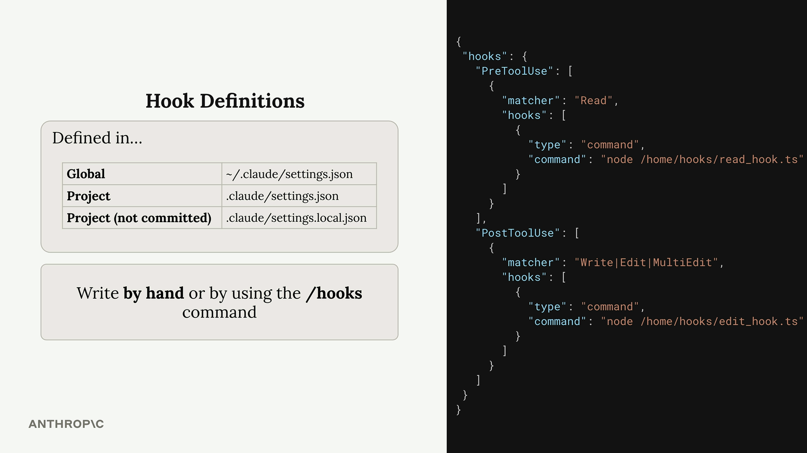

훅 소개
훅을 사용하면 Claude가 도구를 실행하기 전이나 후에 명령을 실행할 수 있습니다. 파일 편집 후 코드 포매터 실행, 파일 변경 시 테스트 실행, 특정 파일에 대한 접근 차단 등 자동화된 워크플로우를 구현하는 데 매우 유용합니다.
훅의 동작 방식
훅을 이해하려면 먼저 Claude Code와 상호작용할 때의 일반적인 흐름을 살펴보겠습니다. Claude에게 무언가를 요청하면, 쿼리가 도구 정의와 함께 Claude 모델로 전송됩니다. Claude는 형식화된 응답을 통해 도구를 사용하기로 결정할 수 있으며, 그러면 Claude Code가 해당 도구를 실행하고 결과를 반환합니다.
훅은 이 과정에 개입하여 도구 실행 직전 또는 직후에 코드를 실행할 수 있게 해줍니다.

훅에는 두 가지 유형이 있습니다:
- PreToolUse hooks - 도구가 호출되기 전에 실행됩니다
- PostToolUse hooks - 도구가 호출된 후에 실행됩니다
훅 설정
훅은 Claude 설정 파일에 정의됩니다. 다음 위치에 추가할 수 있습니다:
-
전역 -
~/.claude/settings.json(모든 프로젝트에 적용) -
프로젝트 -
.claude/settings.json(팀과 공유) -
프로젝트 (커밋하지 않음) -
.claude/settings.local.json(개인 설정)
이 파일들에 직접 훅을 작성하거나 Claude Code 내에서 /hooks 명령을 사용할 수 있습니다.

설정 구조는 두 가지 주요 섹션으로 구성되어 있습니다:

PreToolUse 훅
PreToolUse 훅은 도구가 실행되기 전에 실행됩니다. 어떤 도구 유형을 대상으로 할지 지정하는 매처(matcher)를 포함합니다:
"PreToolUse": [
{
"matcher": "Read",
"hooks": [
{
"type": "command",
"command": "node /home/hooks/read_hook.ts"
}
]
}
]'Read' 도구가 실행되기 전에 이 설정은 지정된 명령을 실행합니다. 명령은 Claude가 수행하려는 도구 호출에 대한 세부 정보를 받으며, 다음을 수행할 수 있습니다:
- 작업이 정상적으로 진행되도록 허용
- 도구 호출을 차단하고 Claude에게 오류 메시지 전송
PostToolUse 훅
PostToolUse 훅은 도구가 실행된 후에 실행됩니다. 다음은 쓰기, 편집, 또는 다중 편집 작업 후에 트리거되는 예시입니다:
"PostToolUse": [
{
"matcher": "Write|Edit|MultiEdit",
"hooks": [
{
"type": "command",
"command": "node /home/hooks/edit_hook.ts"
}
]
}
]도구 호출이 이미 발생했으므로 PostToolUse 훅은 작업을 차단할 수 없습니다. 그러나 다음을 수행할 수 있습니다:
- 후속 작업 실행 (방금 편집된 파일 포맷팅 등)
- 도구 사용에 대해 Claude에게 추가 피드백 제공

실용적인 활용 사례
훅을 활용하는 일반적인 방법들입니다:
- 코드 포맷팅 - Claude가 파일을 편집한 후 자동으로 포맷팅
- 테스트 - 파일이 변경될 때 자동으로 테스트 실행
- 접근 제어 - Claude가 특정 파일을 읽거나 편집하지 못하도록 차단
- 코드 품질 - 린터 또는 타입 검사기를 실행하고 Claude에게 피드백 제공
- 로깅 - Claude가 접근하거나 수정하는 파일 추적
- 유효성 검사 - 명명 규칙 또는 코딩 표준 확인
핵심은 훅을 통해 자신의 도구와 프로세스를 워크플로우에 통합하여 Claude Code의 기능을 확장할 수 있다는 점입니다. PreToolUse 훅은 Claude가 할 수 있는 작업을 제어하고, PostToolUse 훅은 Claude가 수행한 작업을 보완합니다.